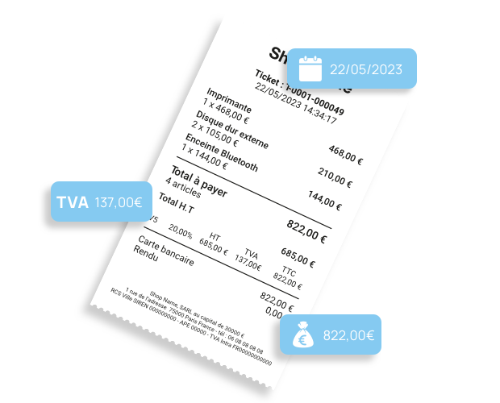
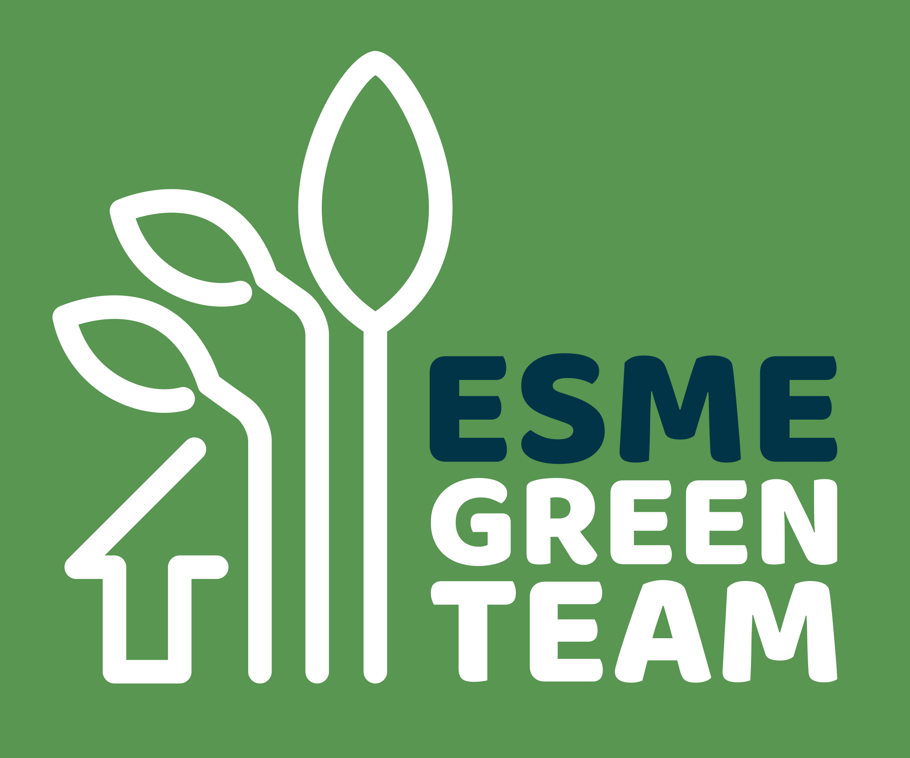

À propos de moi
Jeune étudiant dynamique et curieux, je m'intéresse à tous les sujets scientifiques, avec une préférence pour l'informatique. Je suis en troisième et dernière année du cycle d'ingénieur à l'ESME Sudria, avec une spécialisation en Intelligence Artificielle.
Ce site est mon premier site web et il est encore en construction. J'ai utilisé des outils d'IA pour m'aider dans sa création. Il me reste encore beaucoup à apprendre et à découvrir, comme nous tous. "La vie n'est qu'un long apprentissage."
Mes projets
Generation automatique d'un état de l'art
Pipeline permettant de générer automatiquement un état de l'art sur le sujet que vous souhaitez ! Vous pouvez utiliser un modèle LLM directement en local avec Ollama ou alors utiliser Groq en utilisant des appels API. Le suivi des prompts se fait par Langfuse, vous devez donc créer un compte pour voir le suivi de la pipeline. Plus de détail sur le GitHub.

Lecture automatique de factures
Projet de lecture automatique de factures en INGE 2 utilisant plusieurs modèles d'IA. Un GPU est recommandé pour certains modèles. Poster, Rapport GitHub.

Application Green Team
Application pour l'association Green Team permettant aux étudiants de proposer des améliorations pour réduire la consommation énergétique de l'école. Projet réalisé avec Darel Zouclanounon (GitHub / LinkedIn).
Mon site web
Mon site personnel (Oui, celui-ci !) est hébergé sur GitHub Pages. Accédez au projet ici.